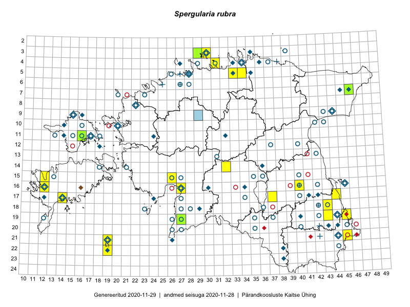

Spergularia rubra
Uuendatud: 2016-12-02
Kaardile koondatud taksonid: Spergularia rubra (L.) J.Presl & C.Presl

Kaart põhineb 17 vaatlusel. Taksonit on leitud 15 ruudust.
Viited andmebaasikirjetele
- Maria Abakumova, Helle Mäemets: 2015-07-01: 14-32: ala
- Indrek Tammekänd: 2015-05-12: 15-26: GPS punkt
- Mari Reitalu, Triin Reitalu: 2015-04-25: 15-12: ala
- Meeli Mesipuu: 2015-06-17: 16-27: ala
- Meeli Mesipuu: 2015-06-17: 16-27: GPS punkt
- Mari Reitalu, Tõnu Ploompuu, Ott Luuk, Peedu Saar: 2014-06-01: 03-30: ala
- Ott Luuk, Mari Reitalu, Tõnu Ploompuu: 2014-06-01: 03-29: ala
- Toomas Kukk, Tiit Hallikma, Johannes Kõdar: 2016-06-14: 21-45: ala
- Toomas Kukk, Tiit Hallikma: 2016-06-17: 19-45: ala
- Sander Laherand, Ott Luuk: 2016-06-17: 19-43: ala
- Maret Gerz, Liina Oja: 2016-06-13: 17-44: ala
- Maret Gerz, Liina Oja: 2016-06-17: 18-43: ala
- Toomas Kukk, Thea Kull: 2016-08-08: 11-16: ala
- Sander Laherand, Toomas Kukk: 2016-08-31: 04-31: ala
- Ott Luuk, Meeli Mesipuu: 2016-09-10: 22-19: ala
- Ott Luuk, Hannes Pehlak: 2016-07-27: 05-34: ala
- Ott Luuk, Sander Laherand: 2016-06-17: 19-43: GPS punkt